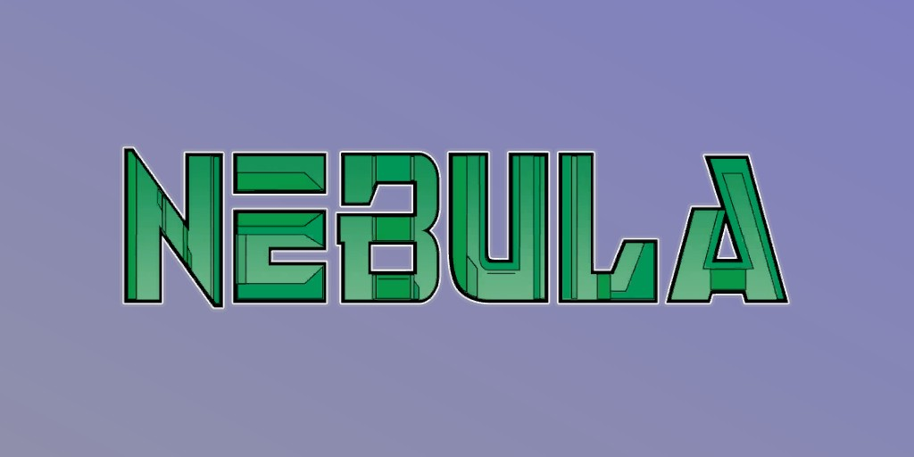
Nebula (Terre-616)
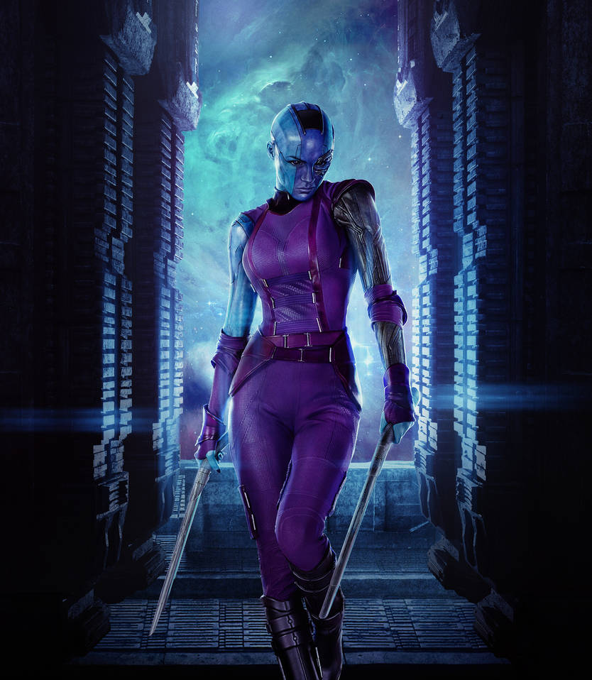
Origines :
La luphomoïde Nebula, redoutable mercenaire et pirate de l'espace, décida un jour de s'emparer du Sanctuaire II, un énorme vaisseau appartenant antérieurement à Thanos.
Ce dernier étant déclaré mort à ce moment, elle en profite et se fait passer pour sa petite-fille.
Nebula envoie quatre de ses hommes, Skunge, Kehl, Gunthar et Levan pour s'emparer du vaisseau.
Dans ce dernier, ils découvrent les Avengers et Captain Marvel (Monica Rambeau) qui enquêtent sur le vaisseau orbitant dans le système solaire.
Nebula demande à Captain Marvel de se joindre à leur groupe et de les aider dans leur conquête de l'Empire Skrull qui est affaibli par la récente destruction du monde capitale provoquée par Galactus.
Monica accepte, mais jouera un double jeu jusqu'à l'arrivée des Avengers qui s'allient aux Skrulls pour repousser les pirates.
Quand Thanos revient, il accapare toutes les Gemmes de l'Infini et forme le Gant de l'infini, devenant alors omnipotent.
Le tyran réclame son vaisseau et punit la voleuse en la laissant défigurée et lobotomisée.
Elle devient alors la servante du Titan Fou.
Elle réussira à s'emparer du Gant de l'Infini des mains de Thanos pendant un court moment, avant d'être arrêtée par son maître et les héros de la Terre.
Emprisonnée sur Titan, Firelord et Starfox lui rendent visite.
En utilisant ses pouvoirs, Starfox est capable de révéler son passé.
Ils découvrent que Nébula a été abusée dans son enfance par son père, qu'elle a finalement tué.
Mais le sondage psychique la laisse dans un état catatonique.
Elle est libérée de sa prison par Geatar qui l'emmène voir le Docteur Mandibus, et le médecin fera d'elle un cyborg.
Le pirate, ayant repris conscience, décide de libérer son équipage incarcéré dans la prison spatiale d'Anvil, mais sera vaincue par le Surfer d'Argent et le Valet de Cœur.
Nébula tuera son équipage lors de sa fuite.
Lors du crossover Annihilation, elle fait partie des Grâces.
Ces dernières sont des guerrières sous les ordres de Gamora, installées sur la planète Godthab Omega.
Avec sa coéquipière Stellaris, elle affronte Ronan l'Accusateur.
Par la suite, avec les autres Grâces, elles défendent leur quartier général contre la Vague d'Annihilation, mais on ne sait pas si elle survit à l'assaut.
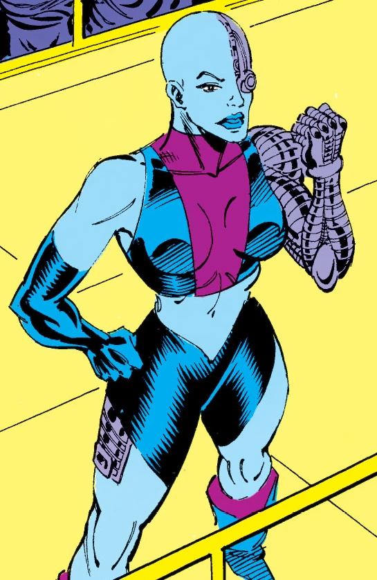
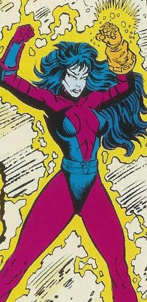
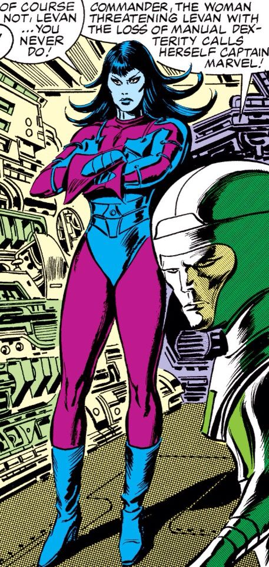
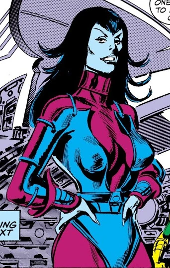

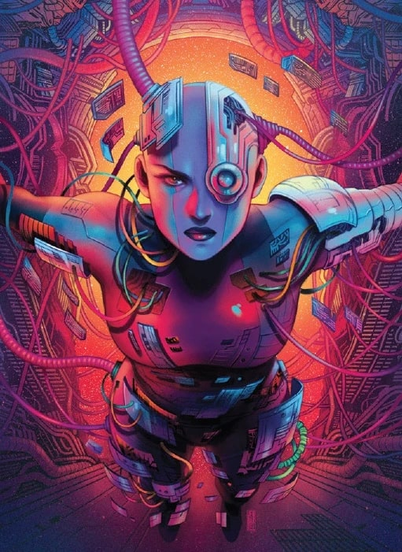
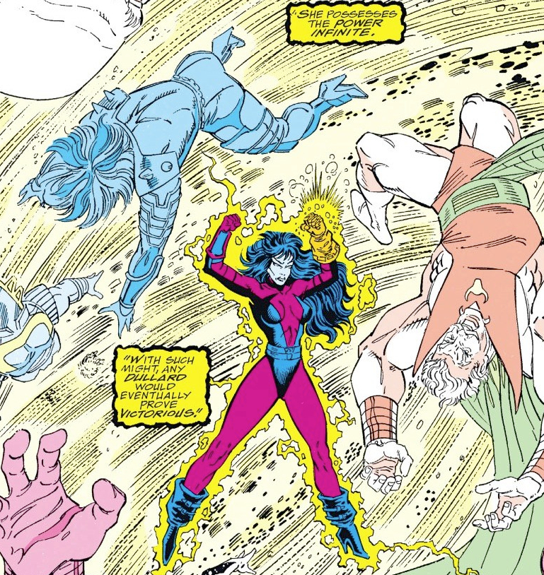
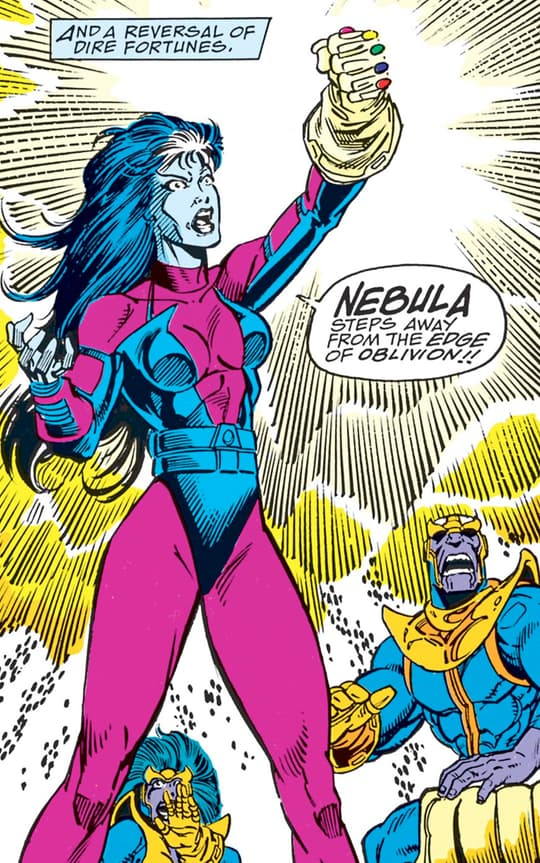
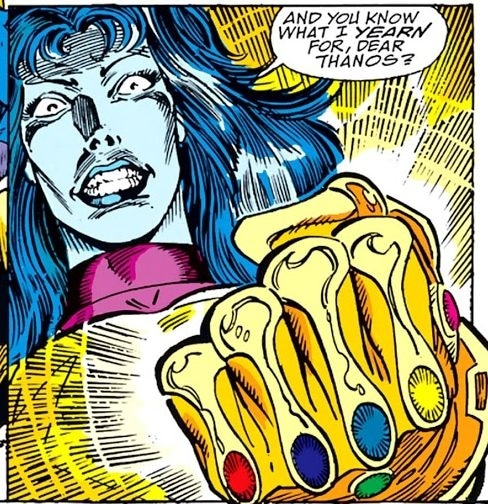
Personnalité :
Nébula est une guerrière impitoyable, froide et extrêmement déterminée.
Stratège redoutable, elle agit avec calcul et ne laisse aucune place à l’improvisation.
Elle possède un tempérament violent et rancunier, nourri par une haine profonde envers Thanos, qu’elle cherche autant à défier qu’à surpasser.
Son besoin de reconnaissance et son passé marqué par la souffrance la poussent à adopter un comportement souvent cruel et destructeur.
Malgré son apparente insensibilité, Nébula est un personnage complexe, dont les émotions sont enfouies sous une façade dure et mécanique.
Elle est généralement perçue comme une ennemie dangereuse, bien que certaines situations la conduisent à coopérer avec d’autres, révélant une nature plus nuancée.
Son esprit est marqué par les traumatismes et les transformations qu’elle a subis, ce qui la rend instable, imprévisible et particulièrement redoutable.
Capacités :
Le corps de Nébula a été modifié cybernétiquement.
Superbe athlète, elle est plus agile, plus forte et plus résistante qu’un être humain normal.
ébula possède des lance-flammes montés sur ses poignets, capables d’incinérer un être humain en quelques secondes.
Sa combinaison est équipée d’un engin holographique pouvant la déguiser ou la fondre dans son environnement.
Elle est intelligente et est une grande tacticienne.
En outre, même très gravement blessée, ses facultés de récupération sont stupéfiantes.
Ses fractures, même déplacées, se réduisent et se réparent en quelques instants, mais la douleur ressentie reste épouvantable et n’améliore en rien la haine ressentie par Nebula, surtout envers sa “sœur” Gamora.

Apparence :
La première version de Nébula dans les comics lui donne l’apparence d’une pirate spatiale à la peau bleue, avec une grande chevelure bleutée et un corps déjà partiellement modifié.
Elle porte généralement une tenue sombre, composée d’une combinaison ajustée, parfois accompagnée d’une cape, avec un style proche des antagonistes cosmiques classiques.
Son design évoluera ensuite vers une apparence plus cybernétique, avec des implants visibles sur le crâne, le visage et certaines parties du corps, renforçant son aspect de guerrière modifiée.
Sa tenue reste généralement sombre (noire ou violette), avec des éléments d’armure légère adaptés au combat.
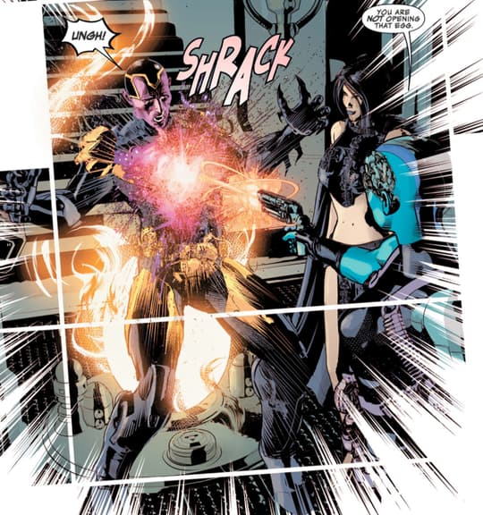
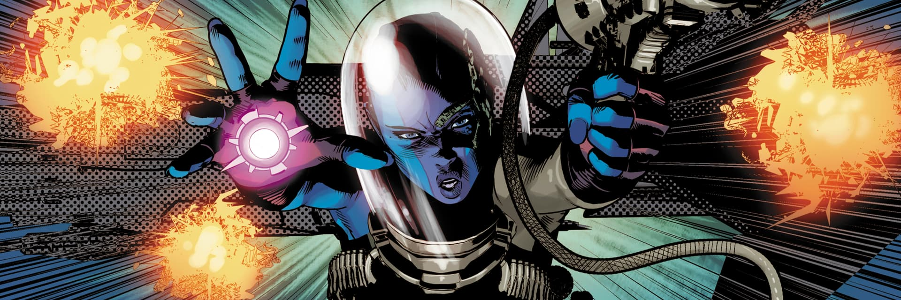
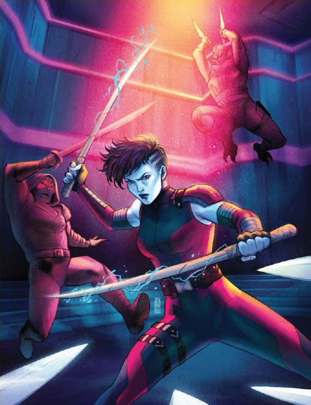
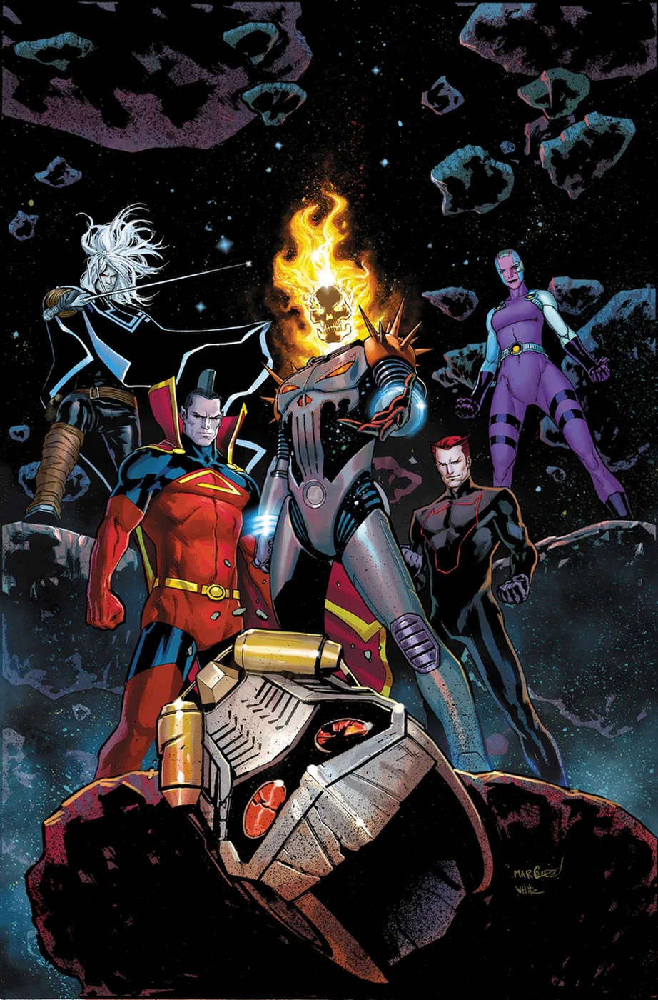
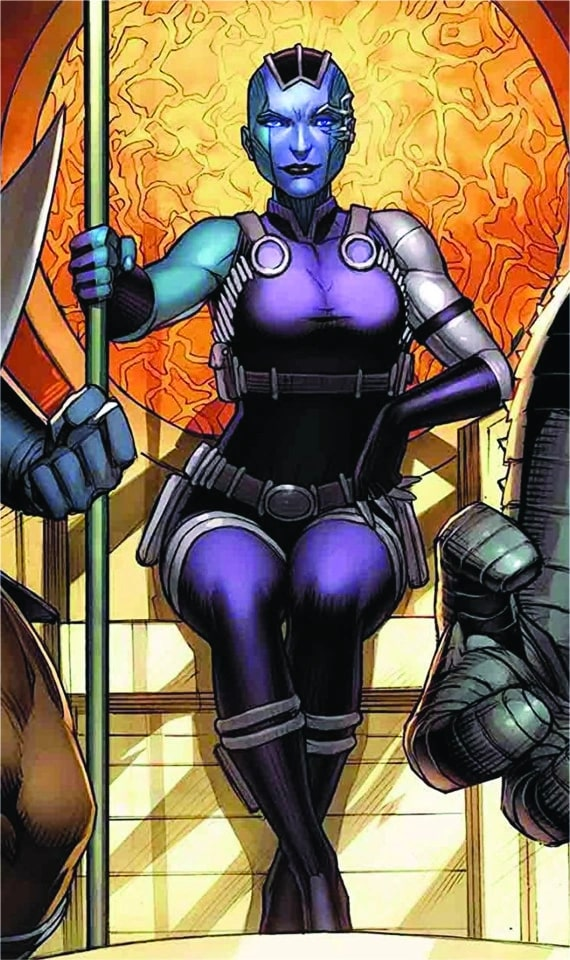
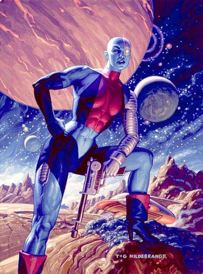